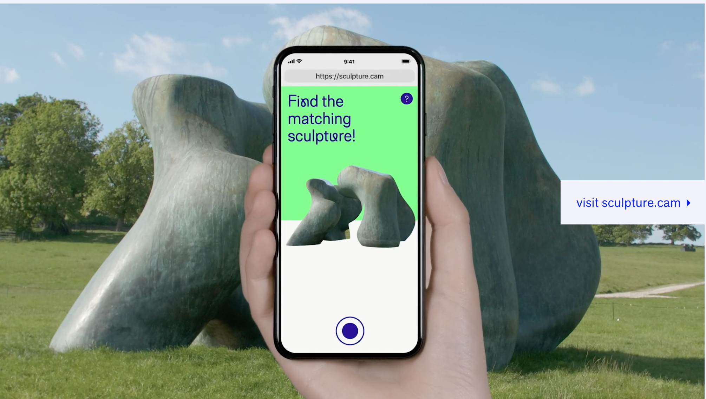
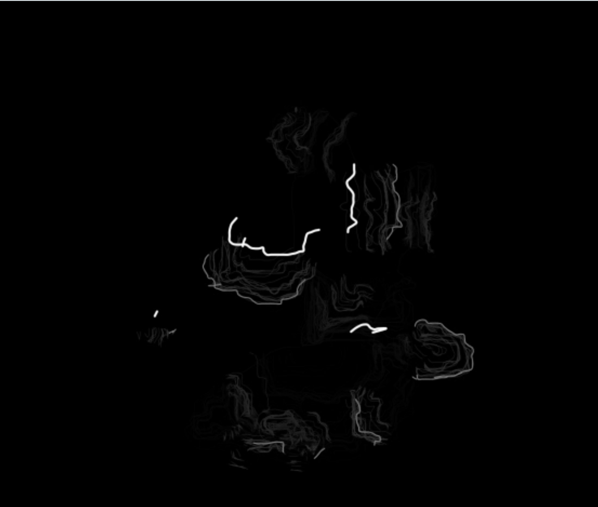

This Week: Conditional Design, Crowd Sourced Code
Jonathan got me stoked and inspired thinking about conditional design in my process.
Maddy made a super cool texture experiment. Think about the role textures, and particularly
alpha channels, can play in digital illustration. They look cool, especially when in motion.
I often struggle with finding the foundational structure behind my coding projects,
especially when randomness comes into play. I am drawn to randomness, and to process based work,
and have been thinking about ways to ground this randomness and process in the real world.
For example, how can the psuedo-random structures of nature inform code? Can the real world
flocking patterns of different types of birds inform the positioning of code elements?
And even better, how can I use the creative variation of people as a way to crowd-source
digital variation?
Create a self portrait by photocopying - start with a sheet of paper,
you can only add to it, and every 3 minutes you create another photocopy


The video.
Really interesting conditional design project: using Amazon Mechanical Turk, and having
participants trace a line, and showing the natural variation over time.
Back Home